[Biography] [Education] [Industry] [Latest News] [Publications] [Projects] [Major Awards] [Patent] [Professional Activities] [个人简介] [教育经历] [工业项目] [最新动态] [论文成果] [代表项目] [主要奖项] [发明专利] [学术活动]
Biography个人简介 [back top][返回顶部]
I am an Algorithm Researcher at the dots team of Xiaohongshu (RED), specializing in Multimodal Large Language Models and Agentic Text-to-Image Models. I received my Ph.D. from the Department of Artificial Intelligence, School of Informatics, Xiamen University, advised by Prof. Rongrong Ji and Prof. Xiaoshuai Sun. Feel free to reach out to me via email.
我是小红书（RED）dots 团队的算法研究员，研究方向为多模态大语言模型与智能体文生图模型。我于厦门大学信息学院人工智能系获得博士学位，师从纪荣嵘教授与孙晓帅教授。欢迎通过邮箱与我联系。
My recent research interests are in Multimodal Large Language Models (MLLMs) and Agentic Text-to-Image Models. I have published 27 papers in top-tier CCF-A/B conferences and journals (17 as first/co-first author, 3 Orals), with 1.6k+ Google Scholar citations. I serve as an Area Chair for ACM MM 2025 Workshop and as a reviewer for CVPR, NeurIPS, ICLR, ICCV, IEEE TPAMI and other venues. I am also the core developer of the open-source External-Attention-pytorch project (12.2k+ GitHub stars). In 2026, I received offers for the flagship top-talent programs of several leading tech companies:
我近期的研究方向集中在多模态大语言模型（MLLMs）与智能体文生图模型。已在 CCF-A/B 类顶级会议与期刊发表论文 27 篇（其中一作/共一 17 篇，3 篇 Oral），谷歌学术引用 1.6k+ 次。担任 ACM MM 2025 Workshop 领域主席，以及 CVPR、NeurIPS、ICLR、ICCV、IEEE TPAMI 等多个会议与期刊的审稿人。同时是开源项目 External-Attention-pytorch 的核心开发者（GitHub 12.2k+ stars）。于 2026 年获得多家头部科技公司顶尖人才计划录用 offer：
 小红书Xiaohongshu Red Star
小红书Xiaohongshu Red Star
 腾讯Tencent 青云Qingyun
腾讯Tencent 青云Qingyun
 阿里Alibaba 通义阿里星Tongyi Star
阿里Alibaba 通义阿里星Tongyi Star
 字节跳动ByteDance 筋斗云Jindouyun
字节跳动ByteDance 筋斗云Jindouyun
 蚂蚁Ant 蚂蚁星Star
蚂蚁Ant 蚂蚁星Star
 华为Huawei 天才少年Genius Youth
华为Huawei 天才少年Genius Youth
 美团Meituan 北斗Beidou
美团Meituan 北斗Beidou
 小米Xiaomi 顶尖人才Top Talent
JD京东 TGT
小米Xiaomi 顶尖人才Top Talent
JD京东 TGT
Education教育经历 [back top][返回顶部]
- 07/2026 -- Now: Algorithm Researcher, dots team, Xiaohongshu (RED), Hangzhou, China
- 2026.07 -- 至今：算法研究员，小红书（RED）dots 团队，杭州
- 06/2025 -- 02/2026: RedStar Intern, HI Lab, dots.vlm team, Xiaohongshu (RED), Shanghai, China
- 2025.06 -- 2026.02：小红书 RedStar 实习生，HI Lab dots.vlm 团队，上海
- 02/2025 -- 06/2025: Research Intern, Alibaba Taotian Group, Hangzhou, China
- 2025.02 -- 2025.06：研究型实习，阿里巴巴淘天集团，杭州
- 02/2024 -- 10/2024: Research Intern, AGI Group, INF Tech, Hangzhou, China
- 2024.02 -- 2024.10：研究型实习，INF Tech（无限光年） AGI 组，杭州
- 12/2021 -- 05/2022: Research Intern, Alibaba DAMO Academy, Hangzhou, China
- 2021.12 -- 2022.05：研究型实习，阿里巴巴达摩院，杭州
- 09/2020 -- 06/2026: Combined M.S.-Ph.D. Program in Intelligence Science and Technology, Xiamen University, Xiamen, China
- 2020.09 -- 2026.06：智能科学与技术 硕博连读，厦门大学，厦门
Industry工业项目 [back top][返回顶部]
| 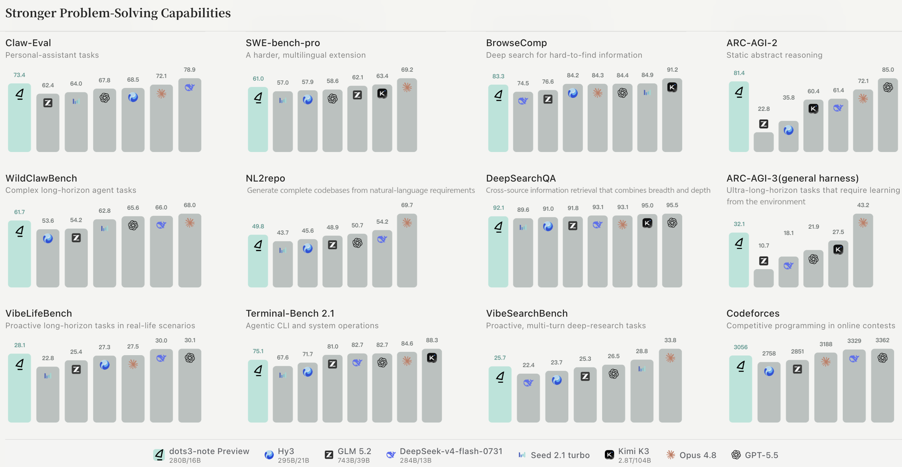 |
dots3-note-prev (Xiaohongshu · dots)
Preview multimodal MoE model from the dots3 family, released on Hugging Face. [Hugging Face] [GitHub] [Project Page] |
|
dots.vlm1.inst (Xiaohongshu · dots)
Instruction-tuned multimodal large language model from the dots series, released on Hugging Face. [Hugging Face] [GitHub] |
|
| 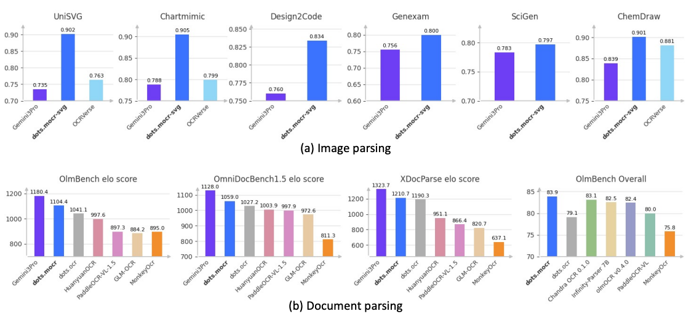 |
dots.mocr (Xiaohongshu · dots)
Multilingual document layout parsing and OCR model from the dots series, released on Hugging Face. [Hugging Face] [GitHub] [arXiv] |
Latest News最新动态 [back top][返回顶部]
- Open-sourced dots3-note-prev, a preview multimodal MoE model from the dots3 family. [Hugging Face] [Project Page]
- 开源 dots3-note-prev，dots3 系列的预览版多模态 MoE 模型。[Hugging Face] [项目主页]
- Joined the dots team at Xiaohongshu (RED) as an Algorithm Researcher.
- 加入小红书（RED）dots 团队，任算法研究员。
- Two papers accepted by International Journal of Computer Vision (IJCV).
- 两篇论文被 International Journal of Computer Vision (IJCV) 接收。
- One paper accepted by ACL 2026 (Findings).
- 一篇论文被 ACL 2026 (Findings) 接收。
- One paper accepted by Pattern Recognition (PR).
- 一篇论文被 Pattern Recognition (PR) 接收。
- One paper accepted by IEEE Transactions on Pattern Analysis and Machine Intelligence (TPAMI).
- 一篇论文被 IEEE Transactions on Pattern Analysis and Machine Intelligence (TPAMI) 接收。
- One paper accepted by ACM MM 2025.
- 一篇论文被 ACM MM 2025 接收。
Publications论文成果 [back top][返回顶部]
Journal期刊
| 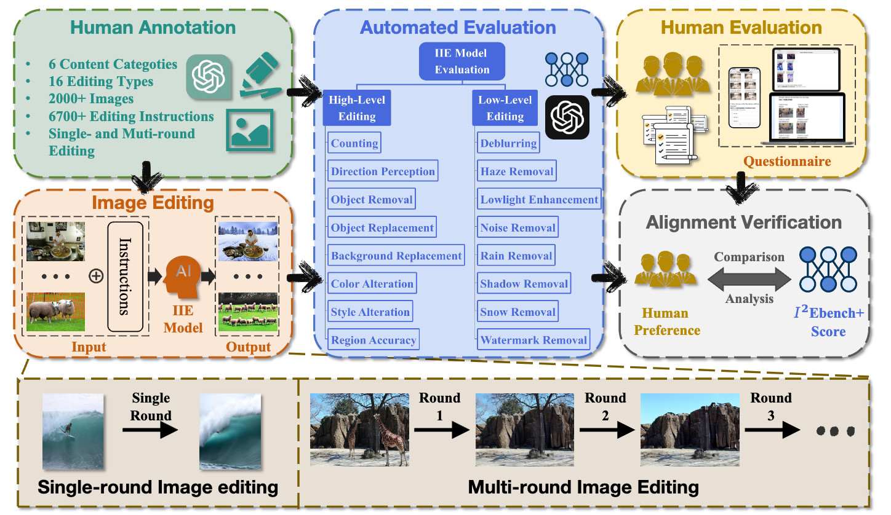 |
Yiwei Ma, Ke Ye, Weihuang Lin, Jiayi Ji, Xiaoshuai Sun✉, Tat-Seng Chua, Rongrong Ji
An Extensive Benchmark for Single-Round and Multi-Round Instruction-Based Image Editing International Journal of Computer Vision (IJCV), 2026 [PDF] [Code] |
| 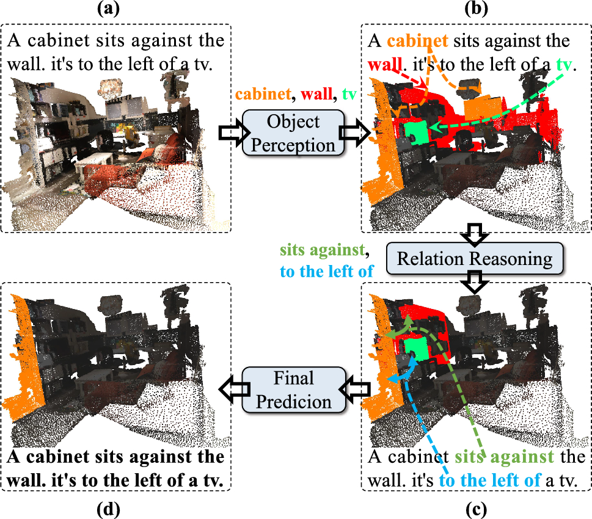 |
Yiwei Ma, Jiayi Ji, Zhipeng Qian, Xiaoshuai Sun✉, Rongrong Ji
CoP: Chain of Perception for Referring 3D Instance Segmentation International Journal of Computer Vision (IJCV), 2026 [PDF] [Code] |
| 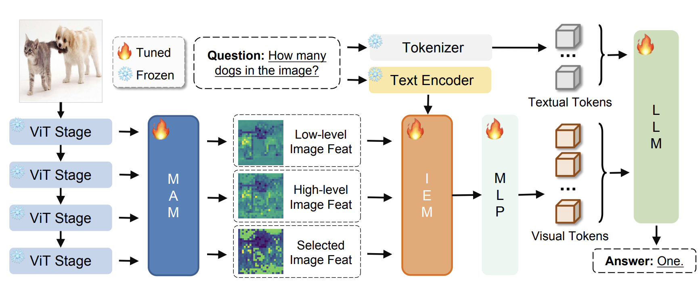 |
Yiwei Ma, Weihuang Lin, Zhibin Wang, Jiayi Ji, Xiaoshuai Sun✉, Chia-Wen Lin, Rongrong Ji
Boosting Multi-Modal Large Language Model with Enhanced Visual Features IEEE Transactions on Pattern Analysis and Machine Intelligence (TPAMI), 2026 [PDF] [Code] |
| 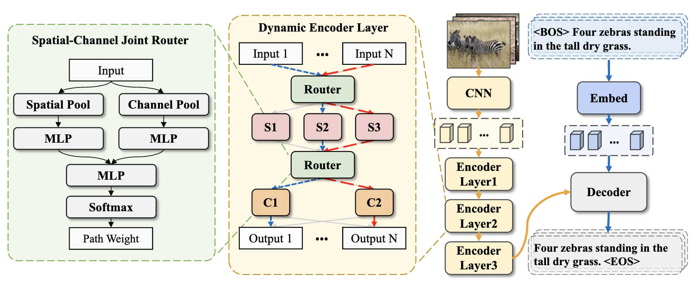 |
Yiwei Ma, Jiayi Ji, Xiaoshuai Sun✉, Yiyi Zhou, Xiaopeng Hong, Yongjian Wu, Rongrong Ji
Image Captioning via Dynamic Path Customization IEEE Transactions on Neural Networks and Learning System (TNNLS), 2024 [PDF] [ArXiv] [Code] |
| 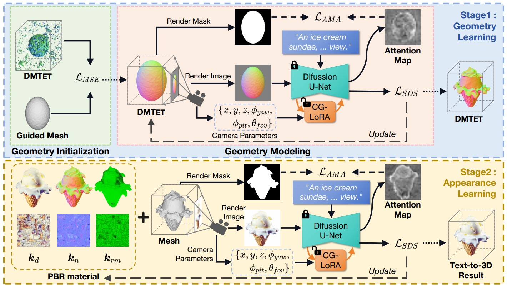 |
Yiwei Ma, Yijun Fan, Jiayi Ji, Haowei Wang, Xiaoshuai Sun✉, Guannan Jiang, Annan Shu, Rongrong Ji
X-Dreamer: Creating High-quality 3D Content by Bridging the Domain Gap Between Text-to-2D and Text-to-3D Generation ACM Transactions on Multimedia Computing, Communications, and Applications (ToMM), 2024 [PDF] [arXiv] [Code] [Project Page] |
| 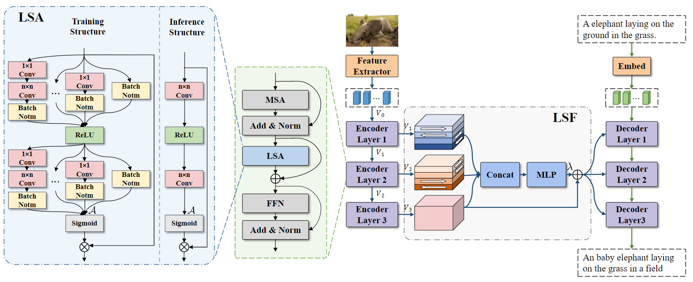 |
Yiwei Ma, Jiayi Ji, Xiaoshuai Sun✉, Yiyi Zhou, Rongrong Ji
Towards Local Visual Modeling for Image Captioning Pattern Recognition (PR), 2023 (ESI Highly Cited Paper)（ESI 高被引论文） [PDF] [ArXiv] [Code] |
| 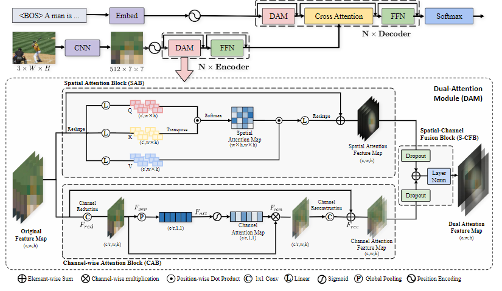 |
Yiwei Ma, Jiayi Ji, Xiaoshuai Sun✉, Yiyi Zhou, Yongjian Wu, Feiyue Huang, Rongrong Ji
Knowing what it is: Semantic-enhanced Dual Attention Transformer IEEE Transactions on Multimedia (TMM), 2022 [PDF] [Code] |
| 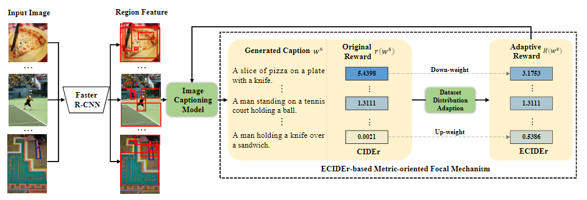 |
Jiayi Ji, Yiwei Ma (co-frist author), Xiaoshuai Sun✉, Yiyi Zhou, Yongjian Wu, Rongrong Ji
Knowing What to Learn: A Metric-oriented Focal Mechanism for Image Captioning IEEE Transactions on Image Processing (TIP), 2022 [PDF] [Code] |
Conference会议
| 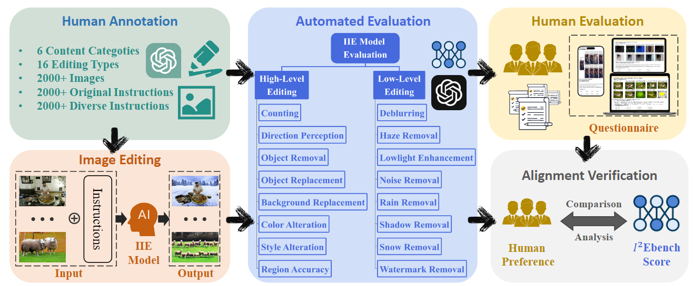 |
Yiwei Ma, Jiayi Ji, Ke Ye, Weihuang Lin, Zhibin Wang, Yonghan Zheng, Qiang Zhou, Xiaoshuai Sun✉, Rongrong Ji
I2EBench: A Comprehensive Benchmark for Instruction-based Image Editing Conference on Neural Information Processing Systems (NeurIPS), 2024 [arXiv] [Code] |
| 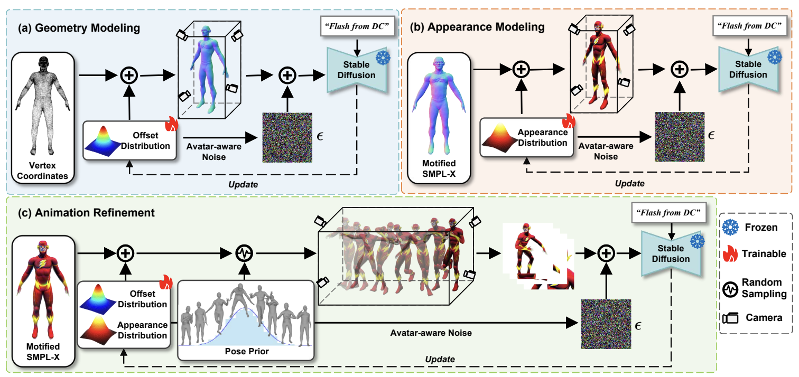 |
Yiwei Ma, Zhekai Lin, Jiayi Ji, Yijun Fan, Xiaoshuai Sun✉, Rongrong Ji
X-Oscar: A Progressive Framework for High-quality Text-guided 3D Animatable Avatar Generation International Conference on Machine Learning (ICML), 2024 [arXiv] [Code] [Project Page] |
 |
Yiwei Ma, Xiaoqing Zhang, Xiaoshuai Sun✉, Jiayi Ji, Haowei Wang, Guannan Jiang, Weilin Zhuang, Rongrong Ji
X-Mesh:Towards Fast and Accurate Text-driven 3D Stylization via Dynamic Textual Guidance IEEE International Conference on Computer Vision (ICCV), 2023 [PDF] [arXiv] [Code] [Project Page] |
| 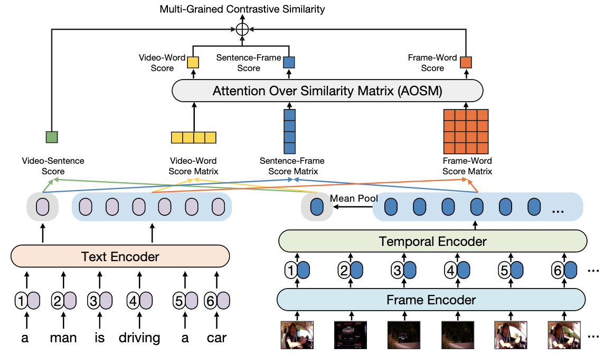 |
Yiwei Ma, Guohai Xu, Xiaoshuai Sun✉, Ming Yan, Ji Zhang, Rongrong Ji
X-CLIP: End-to-End Multi-grained Contrastive Learning for Video-Text Retrieval ACM International Conference on Multimedia (ACM MM), 2022 （Cite: 500+） [PDF] [arXiv] [Code] [Project Page] |
| 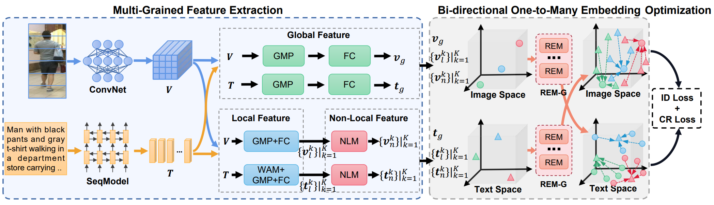 |
Yiwei Ma, Xiaoshuai Sun✉, Jiayi Ji, Guannan Jiang, Weilin Zhuang, Rongrong Ji
Beat: Bi-directional One-to-Many Embedding Alignment for Text-based Person Retrieval ACM International Conference on Multimedia (ACM MM), 2023 [PDF] [Code] [Project Page] |
| 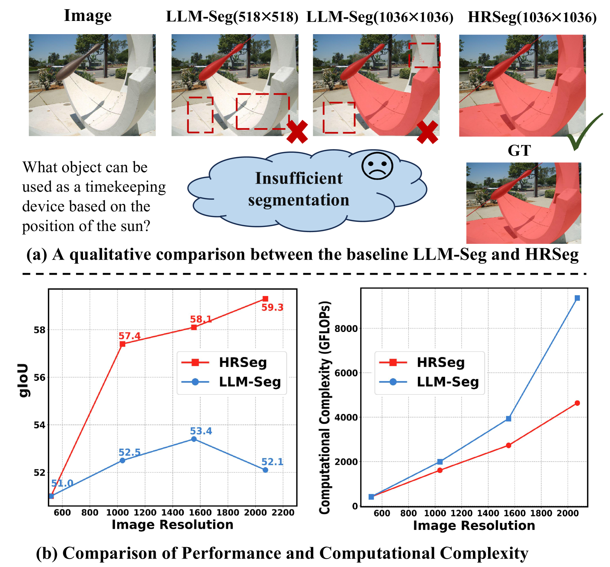 |
Weihuang Lin, Yiwei Ma (co-frist author), Xiaoshuai Sun✉, Shuting He, Jiayi Ji, Liujuan Cao, Rongrong Ji
HRSeg: High-Resolution Visual Perception and Enhancement for Reasoning Segmentation ACM International Conference on Multimedia (ACM MM), 2025 [arXiv] [Code] |
| 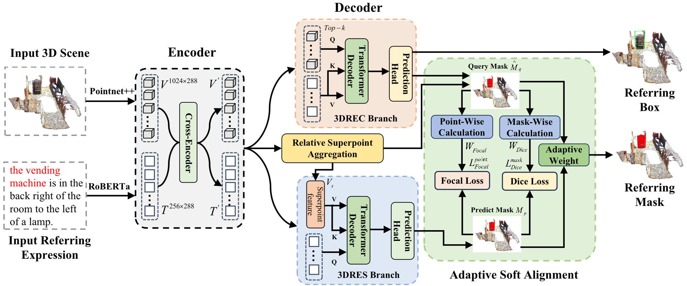 |
Zhipeng Qian, Yiwei Ma (co-frist author), Zhekai Lin, Jiayi Ji, Xiawu Zheng, Xiaoshuai Sun✉, Rongrong Ji
Multi-branch Collaborative Learning Network for 3D Visual Grounding European Conference on Computer Vision (ECCV), 2024 [arXiv] [Code] |
| 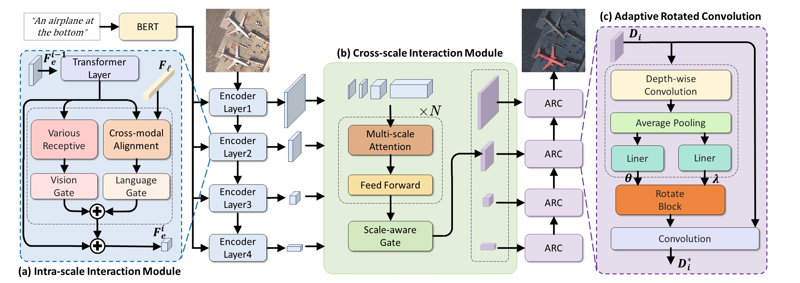 |
Sihan Liu, Yiwei Ma (co-frist author), Xiaoqing Zhang, Haowei Wang, Jiayi Ji✉, Xiaoshuai Sun, Rongrong Ji
Rotated Multi-Scale Interaction Network for Referring Remote Sensing Image Segmentation Computer Vision and Pattern Recognition Conference (CVPR), 2024 [arXiv] [Code] |
 |
Changli Wu, Yiwei Ma (co-frist author), Qi Chen, Haowei Wang, Gen Luo, Jiayi Ji✉, Xiaoshuai Sun
3D-STMN: Dependency-Driven Superpoint-Text Matching Network for End-to-End 3D Referring Expression Segmentation AAAI Conference on Artificial Intelligence (AAAI), 2024 [arXiv] [Code] [PDF] |
| 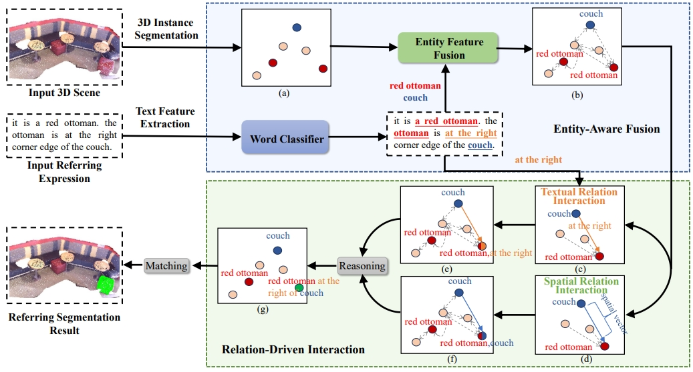 |
Zhipeng Qian, Yiwei Ma (co-frist author), Jiayi Ji, Xiaoshuai Sun ✉
X-RefSeg3D: Enhancing Referring 3D Instance Segmentation via Structured Cross-Modal Graph Neural Networks AAAI Conference on Artificial Intelligence (AAAI), 2024 [Code] [PDF] |
Preprint预印本
| 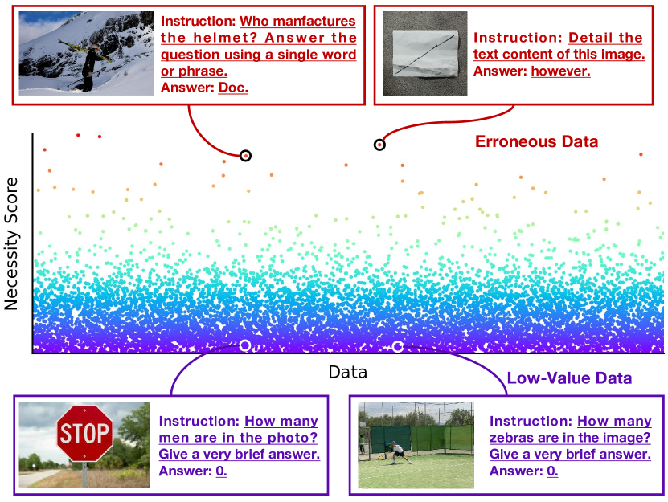 |
Yiwei Ma, Guohai Xu, Xiaoshuai Sun✉, Jiayi Ji, Jie Lou, Debing Zhang, Rongrong Ji
MLLM-Selector: Necessity and Diversity-driven High-value Data Selection for Enhanced Visual Instruction Tuning arXiv preprint arXiv:2503.20502, 2025 [arXiv] |
| 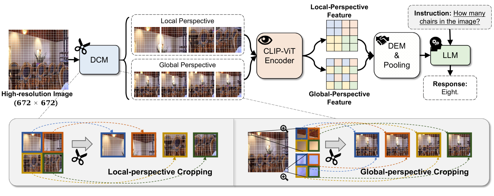 |
Yiwei Ma, Zhibin Wang, Xiaoshuai Sun✉, Weihuang Lin, Qiang Zhou, Jiayi Ji, Rongrong Ji
INF-LLaVA: Dual-perspective Perception for High-Resolution Multimodal Large Language Model arXiv preprint arXiv:2407.16198, 2024 [arXiv] [Code] |
| 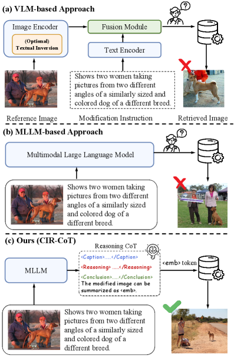 |
Weihuang Lin, Yiwei Ma (co-frist author), Jiayi Ji, Xiaoshuai Sun✉, Rongrong Ji
CIR-CoT: Towards Interpretable Composed Image Retrieval via End-to-End Chain-of-Thought Reasoning arXiv preprint arXiv:2510.08003, 2025 [arXiv] |
| 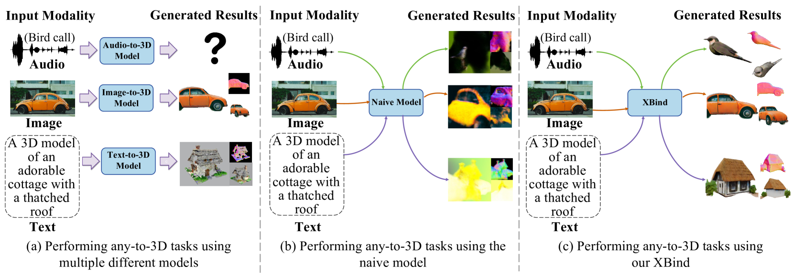 |
Yijun Fan, Yiwei Ma (co-frist author), Jiayi Ji, Xiaoshuai Sun✉, Rongrong Ji
Any-to-3D Generation via Hybrid Diffusion Supervision arXiv preprint arXiv:2411.14715, 2024 [arXiv] |
Projects代表项目 [back top][返回顶部]
| 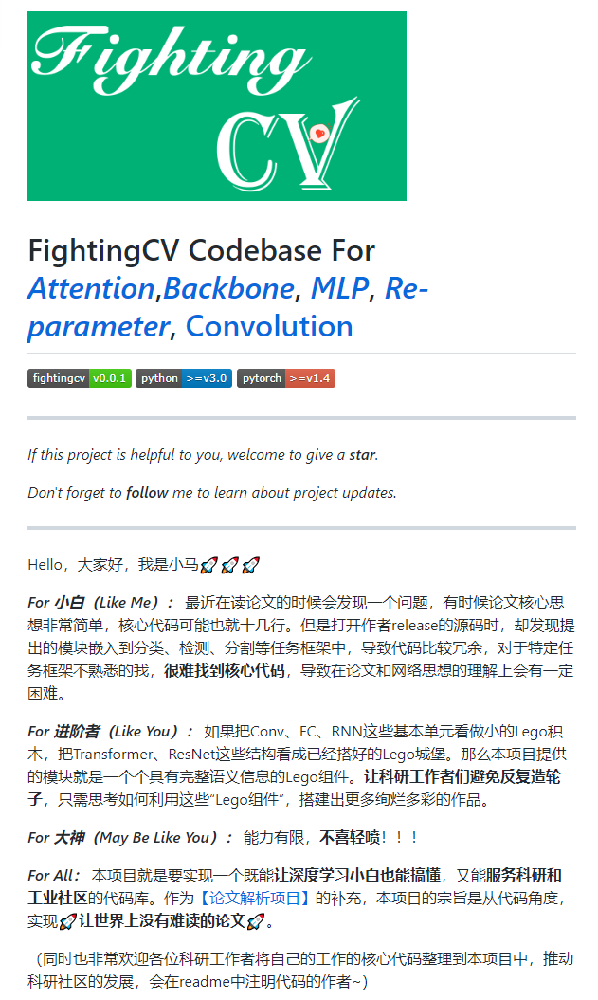 |
External-Attention-pytorch Pytorch implementation of various Attention Mechanisms, MLP, Re-parameter, Convolution, which is helpful to further understand papers. [github ] (12,000+ stars) |
Patent发明专利 [back top][返回顶部]
| 已授权 一种基于文本信息的指向性3D实例分割方法 — 公开号: CN117634486A [详情] |
| 已授权 一种基于链式感知的指向性3D实例分割方法 — 公开号: CN117593527A [详情] |
| 已授权 利用文本到图像扩散模型实现短语级定位的方法 — 公开号: CN118247799A [详情] |
| 已授权 一种面向指向性目标分割的半监督学习方法 — 公开号: CN117975241A [详情] |
| 已授权 面向局部视觉建模的图像描述生成方法 — 公开号: CN115964530A [详情] |
| 已授权 基于文本的人物检索的双向一对多嵌入对齐方法 — 公开号: CN116304145A [详情] |
| 已授权 基于空间感知网络的三维指向性目标分割方法 — 公开号: CN118365659A [详情] |
| 已授权 通过混合扩散监督生成多模态到三维物体的方法 — 授权公告号: CN119625216B [详情] |
| 已授权 基于多模态大语言模型的对话生成方法及装置 — 授权公告号: CN119938874B [详情] |
Major Awards主要奖项 [back top][返回顶部]
- 2026 Top-Talent Program Offers (9): Xiaohongshu Red Star, Tencent Qingyun, Tongyi Alibaba Star, ByteDance Jindouyun, Ant Star, Huawei Genius Youth, Meituan Beidou, Xiaomi Top Talent, JD TGT
- 2026 顶尖人才计划 Offer（9 项）：小红书 Red Star、腾讯青云、通义阿里星、字节跳动筋斗云、蚂蚁星、华为天才少年、美团北斗、小米顶尖人才、京东 TGT
- ESI Highly Cited Paper (Towards Local Visual Modeling for Image Captioning, Pattern Recognition), 2026
- ESI 高被引论文（Towards Local Visual Modeling for Image Captioning，Pattern Recognition），2026
- Young Talent Support Project for Ph.D. Students, China Association for Science and Technology (CAST), 2025
- 中国科协青年人才托举工程博士生专项计划（青托），2025
- National Natural Science Foundation of China (NSFC) Youth Student Basic Research Project (Principal Investigator), 2024
- 国家自然科学基金青年学生基础研究项目（国自然，唯一主持人，资助 30 万元），2024
- Baidu Scholarship (Global Top 40), 2024
- 百度奖学金（全球 40 强），2024
- National Scholarship, 2024
- 博士研究生国家奖学金，2024
- National Scholarship, 2022
- 硕士研究生国家奖学金，2022
- National Scholarship, 2019
- 本科生国家奖学金，2019
- ZheJiang Province Excellent Graduate, 2020
- 浙江省优秀毕业生，2020
- Zhejiang Province Government Scholarship, 2018
- 浙江省政府奖学金，2018
- Xiamen University Huang Xilie Scholarship, 2023
- 厦门大学黄希烈奖学金，2023
- Xiamen University Wind Scholarship, 2022
- 厦门大学万得奖学金，2022
Professional Activities学术活动 [back top][返回顶部]
- Area Chair:领域主席：
- ACM MM 2025 Workshop
- Conference Reviewer:会议审稿人：
- ICML 2024, ICML 2025
- ICLR 2024
- NeurIPS 2024, NeurIPS 2025
- CVPR 2025
- ICCV 2025
- AAAI 2025
- ACM MM 2023, ACM MM 2024, ACM MM 2025
- Journal Reviewer:期刊审稿人：
- IEEE Transactions on Pattern Analysis and Machine Intelligence (TPAMI)
- IEEE Transactions on Image Processing (TIP)
- IEEE Transactions on Multimedia (TMM)
- IEEE Transactions on Circuits and Systems for Video Technology (TCSVT)
- IEEE Transactions on Computational Social Systems (TCSS)
- ACM Transactions on Asian and Low-Resource Language Information Processing (TALLIP)
- Pattern Recognition (PR)
- Neurocomputing